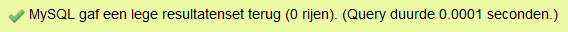

Subquery#
%LOAD data/example.db
Met een subquery kun je eerst informatie opvragen die je nog niet weet. Op basis van die informatie kun je vervolgens een nieuwe query maken. Stel bijvoorbeeld dat je een overzicht wil maken van alle werknemers die in dienst zijn gekomen na Peter Vargas. Dan zul je eerst moeten weten wanneer Peter Vargas in dienst is gekomen!
Eerst maar eens een heel foute manier!
SELECT first_name, last_name, hire_date
FROM employees
WHERE hire_date > '1998-07-09';
| first_name | last_name | hire_date |
|---|---|---|
| Diana | Lorentz | 1999-02-07 |
| Kevin | Mourgos | 1999-11-16 |
| Eleni | Zlotkey | 2000-01-29 |
| Kimberely | Grant | 1999-05-24 |
Deze manier is erg verkeerd omdat je niet kunt weten dat de hire_date van Peter Vargas 1998-07-09 is. Dat heb je waarschijnlijk opgezocht in de papieren versie of in PHPMyAdmin in de tabel employees. En dat mag dus niet!
Je moet eerst de hire_date van Peter Vargas ophalen met een query.
SELECT hire_date
FROM employees
WHERE last_name = 'Vargas';
| hire_date |
|---|
| 1998-07-09 |
Dan neem je die query en die zet je tussen haakjes. Dit gedeelte noemen we de subquery of ook wel de inner query.
(SELECT hire_date
FROM employees
WHERE last_name = 'Vargas')
En dan zetten we daar een andere query voor. Dit gedeelte is de main query of ook wel de outer query genoemd.
SELECT first_name, last_name, hire_date
FROM employees
WHERE hire_date >
(SELECT hire_date
FROM employees
WHERE last_name = 'Vargas');
| first_name | last_name | hire_date |
|---|---|---|
| Diana | Lorentz | 1999-02-07 |
| Kevin | Mourgos | 1999-11-16 |
| Eleni | Zlotkey | 2000-01-29 |
| Kimberely | Grant | 1999-05-24 |
Een ander voorbeeld: Wie werkt er op dezelfde afdeling als Lex De Haan?
Eerst vraag je het department_id op van De Haan.
SELECT department_id
FROM employees
WHERE last_name = 'De Haan';
| department_id |
|---|
| 90 |
Neem die query en zet die tussen haakjes.
(SELECT department_id
FROM employees
WHERE last_name = 'De Haan')
En dan zetten we daar een andere query voor.
SELECT last_name
FROM employees
WHERE department_id =
(SELECT department_id
FROM employees
WHERE last_name = 'De Haan');
| last_name |
|---|
| King |
| Kochhar |
| De Haan |
Wil je daar De Haan zelf niet bij? Dan zet je in de WHERE met != erbij dat de achternaam niet gelijk mag zijn aan De Haan.
SELECT last_name
FROM employees
WHERE last_name != 'De Haan' AND department_id =
(SELECT department_id
FROM employees
WHERE last_name = 'De Haan');
| last_name |
|---|
| King |
| Kochhar |
Er zijn twee soorten subquery’s:
single-row subquery’s
multiple-row subquery’s
Single-row#
Single-row subquery’s geven maar één rij terug.
Ze gebruiken single-row vergelijkingsoperatoren:
= > >= <= <> !=
De subquery komt tussen haakjes.
Voor de bovenste en de onderste query kun je verschillende tabellen gebruiken.
Je mag maar één keer ORDER BY gebruiken en dat moet de laatste regel zijn van de bovenste query (main SELECT statement). Die komt dus helemaal onderaan.
Wie werkt er allemaal op de afdeling Marketing? Dat zijn de personen met hetzelfde department_id, het department_id van de afdeling Marketing.
Eerst haal je dus het department_id op van de afdeling Marketing. Dat staat in de tabel departments.
SELECT department_id
FROM departments
WHERE department_name = 'Marketing';
| department_id |
|---|
| 20 |
Zet die query tussen haakjes en zet er een andere query voor. Voor de duidelijkheid laten we de subquery inspringen.
SELECT last_name, job_id, department_id
FROM employees
WHERE department_id =
(SELECT department_id
FROM departments
WHERE department_name = 'Marketing')
ORDER BY job_id;
| last_name | job_id | department_id |
|---|---|---|
| Hartstein | MK_MAN | 20 |
| Fay | MK_REP | 20 |
Je kunt meerdere subquery’s gebruiken.
SELECT last_name, job_id, salary, department_id
FROM employees
WHERE job_id =
(SELECT job_id
FROM employees
WHERE employee_id = 141)
AND department_id =
(SELECT department_id
FROM departments
WHERE location_id = 1500);
| last_name | job_id | salary | department_id |
|---|---|---|---|
| Rajs | ST_CLERK | 3500 | 50 |
| Davies | ST_CLERK | 3100 | 50 |
| Matos | ST_CLERK | 2600 | 50 |
| Vargas | ST_CLERK | 2500 | 50 |
Multiple-row#
Multiple-row subquery’s kunnen meer dan één resultaat opleveren. Dan kun je de single-row operators (zoals bijvoorbeeld het = teken) niet gebruiken.
Ze gebruiken multiple-row vergelijkingsoperatoren:
IN ANY ALL
De NOT operators kan bij alle drie gebruikt worden.
Naar IN zullen we kijken maar ANY en ALL laten we buiten beschouwing in deze cursus.
Met de IN operator in de outer query kun je alle rijen selecteren die voorkomen in een lijstje van waarden dat gemaakt is met de inner query.
Stel dat we alle namen van werknemers willen die in hetzelfde jaar zijn aangenomen als werknemers van afdeling 90. Eerst moeten we een subquery (inner query) maken om een lijstje op te halen met de jaren waarin werknemers van afdeling 90 zijn aangenomen.
SELECT strftime('%Y', hire_date)
FROM employees
WHERE department_id = 90;
| strftime('%Y', hire_date) |
|---|
| 1987 |
| 1989 |
| 1993 |
Die subquery zetten we tussen haakjes en daar zetten we de outer query boven.
SELECT last_name, strftime('%Y', hire_date) as year
FROM employees
WHERE year IN
(SELECT strftime('%Y', hire_date)
FROM employees
WHERE department_id = 90);
| last_name | year |
|---|---|
| King | 1987 |
| Kochhar | 1989 |
| De Haan | 1993 |
| Whalen | 1987 |
Multiple-row subquery’s zijn altijd veiliger dan single-row subquery’s. Vergelijk deze twee query’s met elkaar.
SELECT first_name, last_name, job_id
FROM employees
WHERE job_id IN
(SELECT JOB_ID
FROM employees
WHERE last_name= 'Ernst' );
| first_name | last_name | job_id |
|---|---|---|
| Alexander | Hunold | IT_PROG |
| Bruce | Ernst | IT_PROG |
| Diana | Lorentz | IT_PROG |
SELECT first_name, last_name, job_id
FROM employees
WHERE job_id =
(SELECT JOB_ID
FROM employees
WHERE last_name = 'Ernst' );
| first_name | last_name | job_id |
|---|---|---|
| Alexander | Hunold | IT_PROG |
| Bruce | Ernst | IT_PROG |
| Diana | Lorentz | IT_PROG |
Ze hebben beide hetzelfde resultaat.
Tip
Waar je = zou gebruiken, werkt IN dus ook altijd. Als je twijfelt: gebruik IN in plaats van =.
Exists#
EXISTS en NOT EXISTS kunnen worden gebruikt voor subquery’s.
Stel dat je wil onderzoeken welke department_id’s in de tabel departments staan en ook bestaan (exist) in de tabel employees.
SELECT department_id
FROM departments
WHERE EXISTS
(SELECT * FROM employees
WHERE departments.department_id = employees.department_id)
ORDER BY department_id;
| department_id |
|---|
| 10 |
| 20 |
| 50 |
| 60 |
| 80 |
| 90 |
| 110 |
Of juist het tegenovergestelde. Welk department_id komt wel voor in departments maar bestaat niet (not exists) niet in employees?
SELECT department_id
FROM departments
WHERE NOT EXISTS
(SELECT * FROM employees
WHERE departments.department_id = employees.department_id)
ORDER BY department_id;
| department_id |
|---|
| 190 |
Welke werknemers zijn geen manager?
Dat kun je onderzoeken met een SELF JOIN en een SUBQUERY. Bij een SELF JOIN gebruik je dezelfde tabel twee maal met verschillende aliassen. In dit voorbeeld wordt de tabel employees één keer gebruikt als emp en één keer als mgr.
SELECT last_name AS not_a_manager
FROM employees e
WHERE NOT EXISTS
(SELECT *
FROM employees m
WHERE m.manager_id = e.employee_id);
| not_a_manager |
|---|
| Ernst |
| Lorentz |
| Rajs |
| Davies |
| Matos |
| Vargas |
| Abel |
| Taylor |
| Grant |
| Whalen |
| Fay |
| Gietz |
Null#
Het kan zijn dat bij een single-row subquery de subquery als resultaat NULL oplevert. Zo heeft Grant bijvoorbeeld geen department_id.
SELECT department_id
FROM employees
WHERE last_name = 'Grant';
| department_id |
|---|
En we stellen de vraag wie er op dezelfde afdeling werken als Grant.
SELECT last_name
FROM employees
WHERE department_id =
(SELECT department_id
FROM employees
WHERE last_name = 'Grant');
| last_name |
|---|
Dan krijg je een leeg resultaat terug: geen enkele rij dus.
leeg resultaat in MySQL
MySQL geef in dit geval de melding:

Een vergelijking met NULL levert altijd FALSE op. En als een conditie FALSE is, worden de rijen uitgesloten van het query resultaat.
Als bij een multiple-row query één van de waarden van de subquery NULL is, dan worden enkel de waarden die niet NULL zijn gebruikt.
Welke werknemers zijn er allemaal manager? Dat zijn de manager_id’s die voorkomen in de lijst van employee_id’s.
Eerst halen we alle manager_id’s op. Daar zit één NULL waarde bij. King is de grootste baas en hij heeft geen manager.
SELECT DISTINCT manager_id
FROM employees;
| manager_id |
|---|
| 100 |
| 102 |
| 103 |
| 124 |
| 149 |
| 101 |
| 201 |
| 205 |
Die subquery (inner query) zetten we tussen haakjes en daar zetten we de outer query boven.
SELECT last_name, employee_id
FROM employees
WHERE employee_id IN
(SELECT DISTINCT manager_id
FROM employees);
| last_name | employee_id |
|---|---|
| King | 100 |
| Kochhar | 101 |
| De Haan | 102 |
| Hunold | 103 |
| Mourgos | 124 |
| Zlotkey | 149 |
| Hartstein | 201 |
| Higgins | 205 |
Het is altijd oppassen met NULLS in de subquery bij het gebruik van IN of NOT IN. Als je niet zeker weet of een NULL voor gaat komen in de subquery en er misschien een verkeerd resultaat uit volgt, kun je beter die NULL uitsluiten met een WHERE.
SELECT last_name, employee_id
FROM employees
WHERE employee_id IN
(SELECT DISTINCT manager_id
FROM employees
WHERE manager_id IS NOT NULL);
| last_name | employee_id |
|---|---|
| King | 100 |
| Kochhar | 101 |
| De Haan | 102 |
| Hunold | 103 |
| Mourgos | 124 |
| Zlotkey | 149 |
| Hartstein | 201 |
| Higgins | 205 |
Groepsfuncties#
Het is mogelijk groepsfuncties te gebruiken in subquery’s, zoals MIN, MAX, SUM en AVG.
Wie verdient er minder dan het gemiddelde salaris?
Eerst maak je de query voor het gemiddelde salaris met de groepsfunctie AVG.
SELECT AVG(salary)
FROM employees;
| AVG(salary) |
|---|
| 8775.0 |
Dat zet je tussen haakjes en daar zet je een andere query voor.
SELECT last_name, salary
FROM employees
WHERE salary <
(SELECT AVG(salary)
FROM employees);
| last_name | salary |
|---|---|
| Ernst | 6000 |
| Lorentz | 4200 |
| Mourgos | 5800 |
| Rajs | 3500 |
| Davies | 3100 |
| Matos | 2600 |
| Vargas | 2500 |
| Taylor | 8600 |
| Grant | 7000 |
| Whalen | 4400 |
| Fay | 6000 |
| Gietz | 8300 |